ESTETICO
ESTETICO
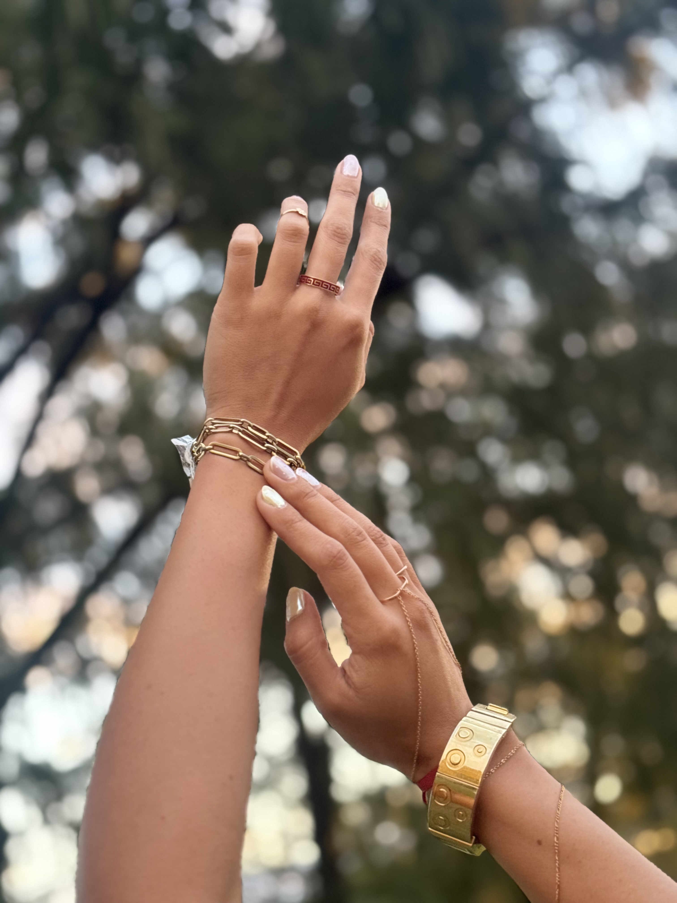
ORIGINALIDAD
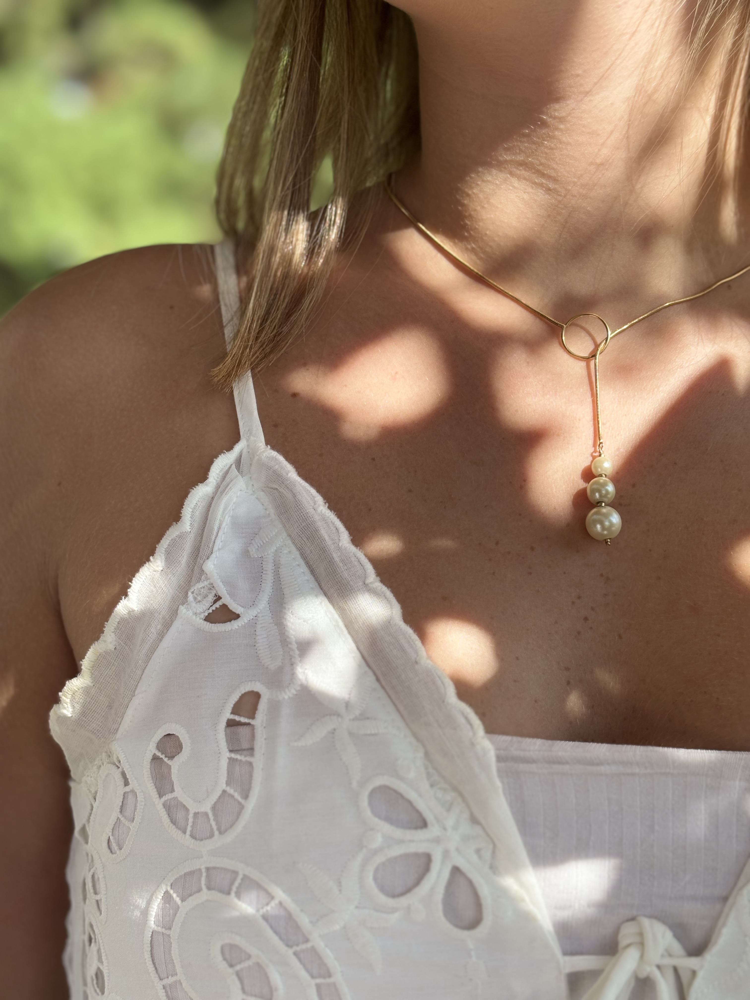
DELICADEZA
Este negocio comenzo en 1950, donde Eduardo Salerno, conocido entre nosotros como “Lalo“ estudió para ser técnico relojero. Su profesor era austríaco, Frank Sandominghi, el cual trabajo en la NASA, y luego se mudó a Argentina.
En ese momento Eduardo conoció a Alicia Noemí Garcia, conocida como “Lita“, quien se convirtió en su esposa y madre de sus tres hijos, Eduardo Victor (mi papá), Gustavo y Silvia. Lalo en ese momento tenia una relojería donde vendía y reparaba relojes. Al unirse con Lita, ella comenzo a comprar mercadería en Bs As, y así su negocio comenzó a ser una relojería/joyería.
Hoy Lalo ya no está con nosotros, y Lita no pudo continuar con el negocio desde 2025, y yo, su nieta, Josefina Alicia Salerno, decidí ayudarla a seguir con el negocio de su vida, poniendole mi estilo y creaciones. Para que el emprendimiento que algun día hizo mi abuela con el amor de su vida, siga adelante.
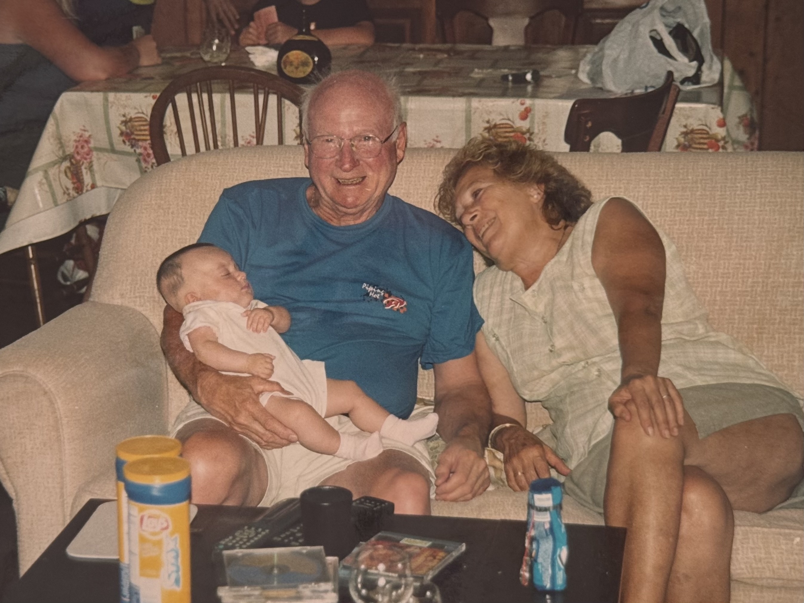
Lorem.............................................................................
.................................................................................
.................................................................................
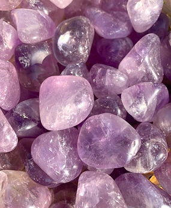
Beneficio: calmar la mente, reducir la ansiedad y el estrés, mejorar el sueño, y fomentar la claridad mental.
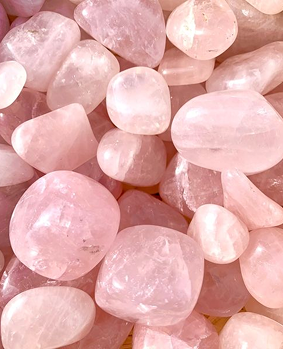
Beneficio: fomentar el amor propio, fortalecer relaciones y sanar heridas emocionales.
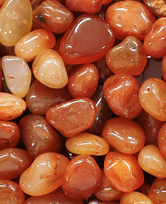
Beneficio: gema de la vitalidad, creatividad y motivación. Se utiliza para aumentar la confianza, el coraje y la pasión, ayudando a superar miedos y bloqueos.
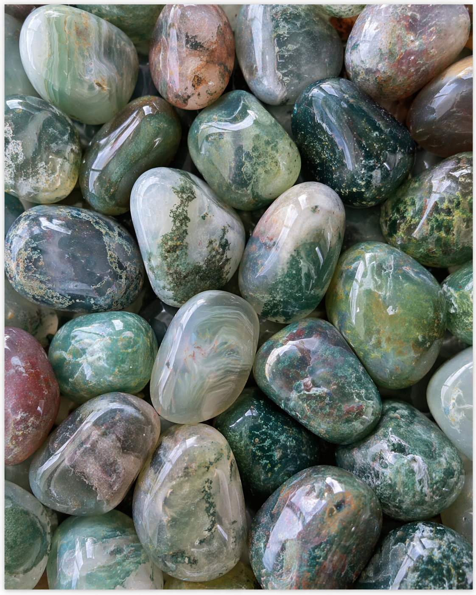
Beneficio: Piedra de equilibrio, protección y prosperidad, ideal para estabilizar la energía física, emocional y mental. Ayuda a reducir el estrés, la ansiedad y la ira, promoviendo la calma y la seguridad personal.
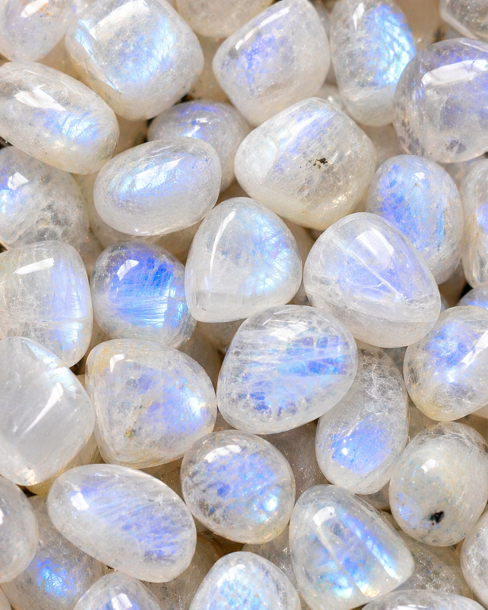
Beneficio: reconocida por equilibrar emociones, reducir estrés y potenciar la intuición. Conectada con la energía femenina, fomenta la fertilidad y la calma interior.
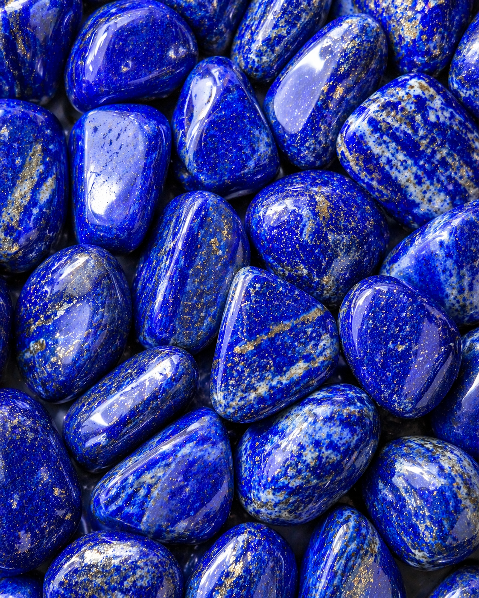
Beneficio: Propiedades calmantes, comunicativas y espirituales. Fomenta la expresión sincera, la sabiduría, la reducción del estrés y la estimulación de la creatividad.
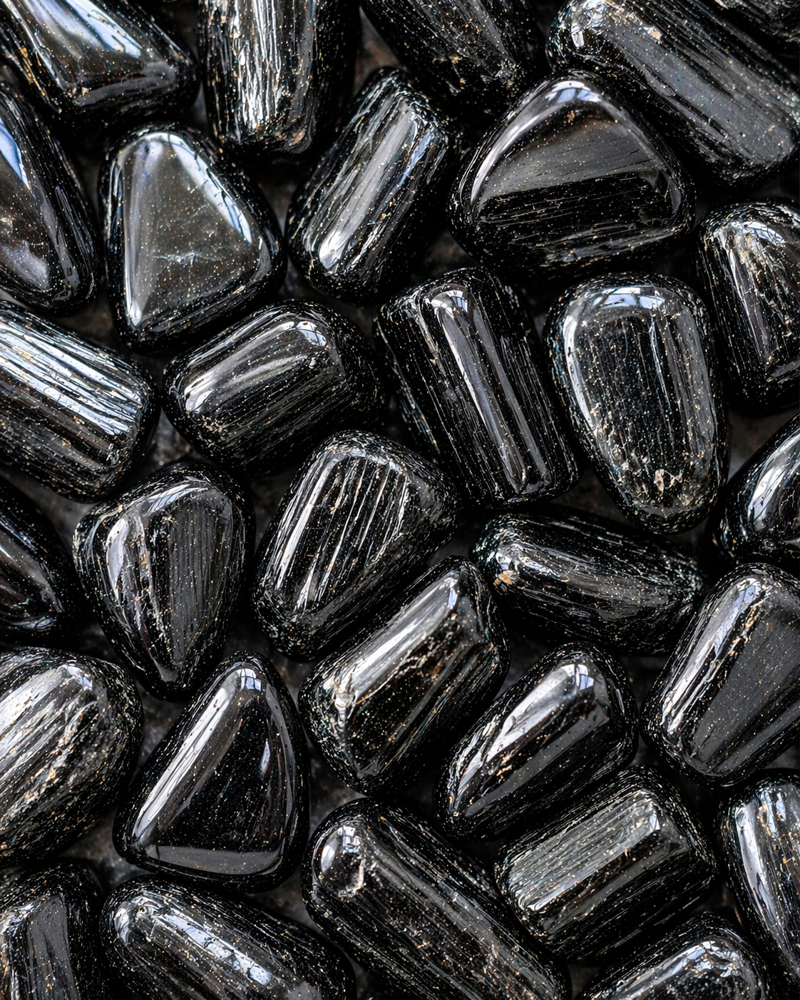
Beneficio: Ayuda a recuperar el equilibrio interno, aporta firmeza emocional y favorece los procesos de limpieza y transformación. Actúa como canales que transforman las energías densas, aumentando la vibración general del cuerpo.
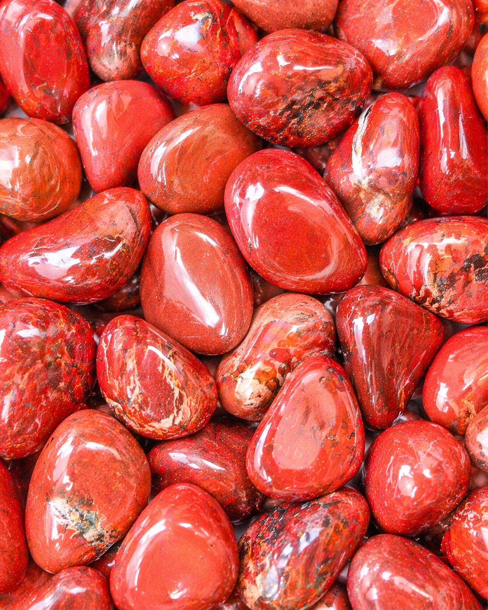
Beneficio: Propiedades de protección, fuerza física y equilibrio emocional. Fomenta el valor, la toma de decisiones y la energía física, siendo ideal para la estabilidad.
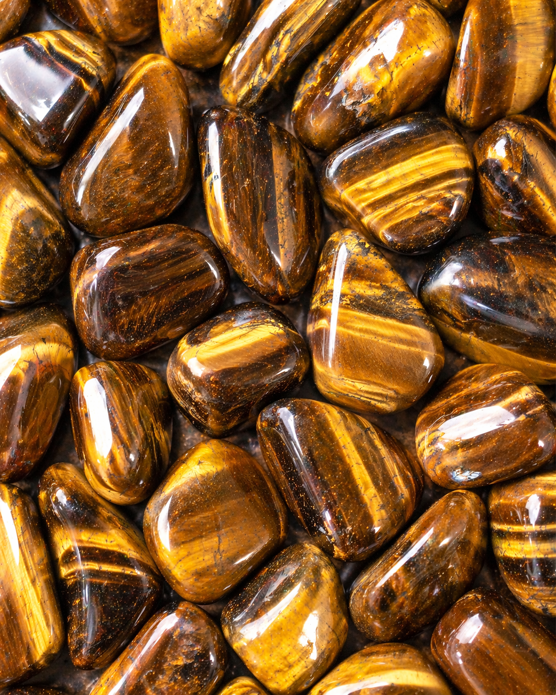
Beneficio: es una piedra protectora muy valorada, considerada un amuleto que desvía energías negativas, envidias y el mal de ojo. Potencia la confianza, la fuerza de voluntad, la seguridad personal y la prosperidad, además de equilibrar emociones y disipar el miedo.
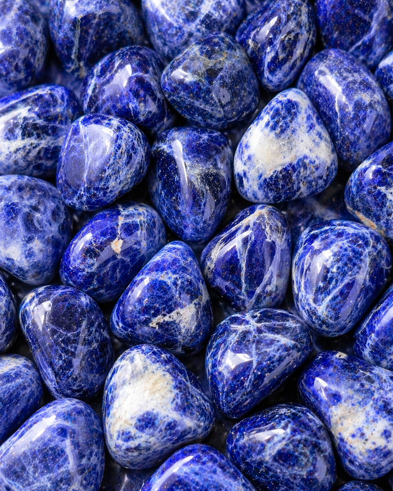
Beneficio: promover la claridad mental, la comunicación, la intuición y el equilibrio emocional.